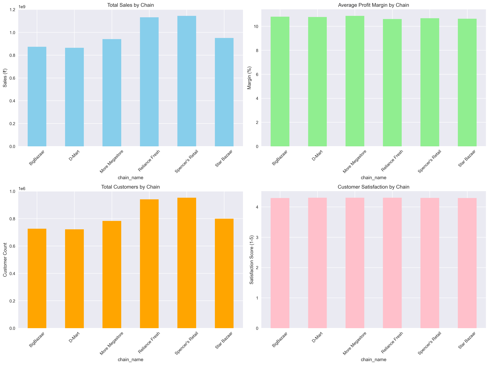
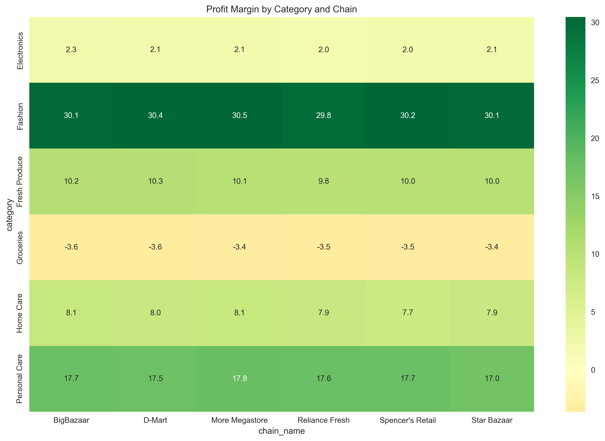
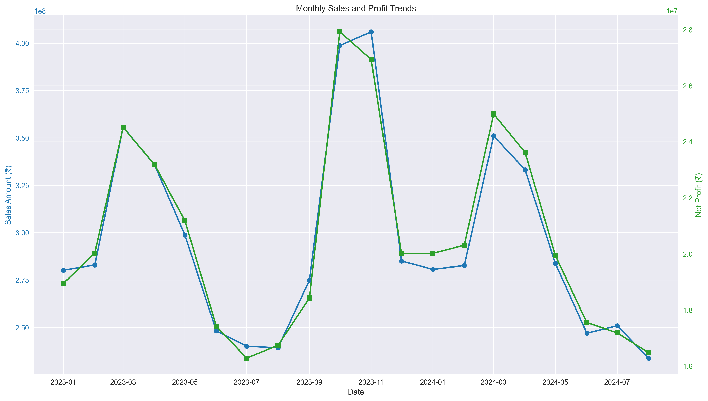
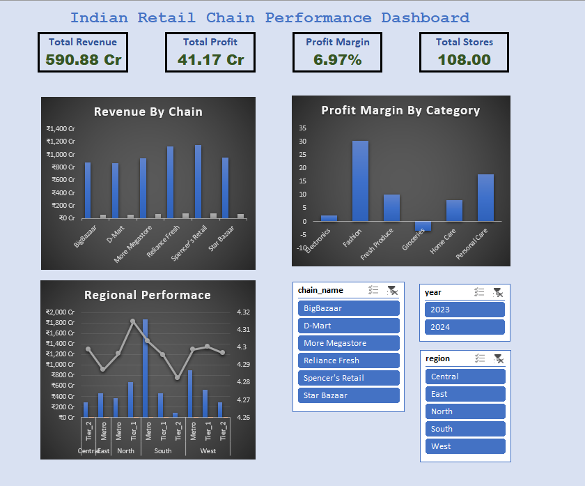

Indian Retail Performance Analysis
A Data Analysis Project by Ayush Singhal
An end-to-end data analysis project that transforms raw retail data into actionable business intelligence. This showcase demonstrates a complete workflow, from data wrangling and querying to the final creation of a highly interactive, executive-level dashboard, highlighting key performance insights for major Indian retail chains.
Key Insights
High Profitability in Fashion
The Fashion category stands out with the highest profitability, boasting margins over 30%, making it a key area for growth.
Groceries Are Loss-Making
Despite contributing 35% of sales, the Groceries category operates at a loss with a -3.5% margin, requiring urgent operational optimization.
South Region Dominates Sales
The South region is the top revenue contributor, accounting for ₹241 Crores in sales, marking it as a critical market for investment.
High Customer Satisfaction
Customer satisfaction is consistently high across all city tiers (averaging 4.3/5), indicating strong service quality and brand loyalty.
Tools & Technologies
Python
SQL

Excel
Power BI
Project Workflow
Python
Data Cleaning & Analysis
SQL
Insight Gathering
Excel
KPI Dashboards
Power BI
Interactive Visuals
Project Showcase
Python Analysis
Data Quality Assessed
Validated 12,960 records, confirming 100% data integrity with zero missing values or duplicates before analysis.
Financial Performance Calculated
Aggregated key financial metrics, revealing a total revenue of ₹590.9 Crores and an overall profit margin of 6.97%.
Category Insights Uncovered
Identified Fashion as the most profitable category (30.2% margin) and Groceries as a key area for operational improvement (-3.5% margin).
Statistical Significance Found
Conducted statistical tests confirming a significant difference in sales performance between Metro and Tier-1 cities.
Key Visualizations
Chain Performance
Category Profitability
Monthly Sales Trends
SQL Insights
Ranking Chains by Performance
Wrote queries using window functions to rank each retail chain by total sales and average profit margin, identifying market leaders.
Analyzing Geographic Performance
Aggregated sales data by region and city tier to pinpoint the highest-performing geographical areas, such as the South region.
Identifying Top & Bottom Stores
Used subqueries and UNION clauses to create a consolidated view of the top 10 and bottom 10 performing stores for targeted action.
Assessing Operational Efficiency
Calculated key efficiency metrics like sales per square foot and sales per employee to evaluate store-level operational performance.
Excel Dashboard
Developed an initial dashboard mockup in Excel using Pivot Tables and charts. This step was crucial for defining key KPIs, structuring the layout, and prototyping the visual elements before moving to the final Power BI implementation.
Power BI Dashboard
The project culminated in a professional, dark-themed Power BI dashboard. It features interactive filters, drill-down capabilities, and visually compelling charts that present the key findings in an intuitive and executive-ready format.

View The Full Project
Explore the complete source code, datasets, and detailed documentation on the GitHub repository.
View on GitHub